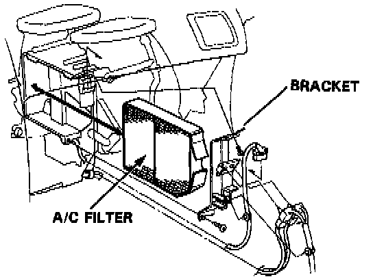

Cabin Air Filter / Purifier: Service and Repair

1. Remove the glove box. Service and Repair
2. Remove the bracket bolts and screw, then remove the A/C filter.
- Replace every 15,000 miles (24,000 km) or 12 months.
- Install the A/C filter in the reverse order of removal, then make sure it doesn't leak any air.